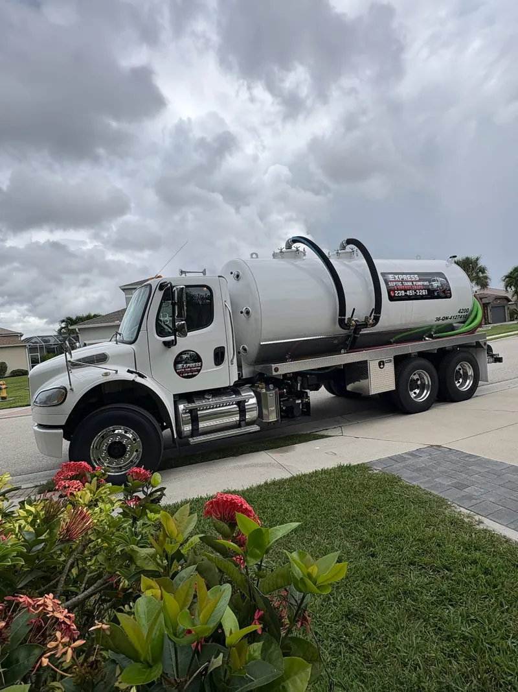

Septic Tank Pumping in Southwest Florida — Estero, Bonita Springs, Naples & Fort Myers

Septic emergency or backup? We're here for you in case of an emergency and can often make it same day when possible. Call (239) 451-3261 now.
Looking for septic service near you? Express Septic Tank Pumping provides septic tank pumping, septic tank cleaning and septic inspections for homes and businesses across Southwest Florida. Based in Estero, we serve homes and businesses throughout Lee and Collier County, including Bonita Springs, Naples, Fort Myers, Cape Coral and more.
Why Choose Express Septic Tank Pumping
- Honest, upfront pricing: we give you a quote before we start.
- Reliable: we show up on time and do what we say.
- Fair rates: straightforward pricing for the work you need.
- Customer service first: we treat every customer right. About us.
Our Septic Services
Why Regular Septic Pumping Matters
Pumping your septic tank every 3–5 years keeps solids out of your drain field, prevents backups and sewage odors, and helps your system last. Florida's high water table and heavy summer rains make maintenance even more important.

How much does it cost to pump a septic tank in Florida?
Every tank and property is different, so cost depends on tank size, access and location. Call (239) 451-3261 for a quote.
Areas We Serve
- Septic Tank Pumping Estero
- Septic Tank Pumping Bonita Springs
- Septic Tank Pumping Naples
- Septic Tank Pumping North Naples
- Septic Tank Pumping Fort Myers
- Septic Tank Pumping Cape Coral
- Septic Tank Pumping Lehigh Acres
- Septic Tank Pumping San Carlos Park
- Septic Tank Pumping East Naples
- Septic Tank Pumping Golden Gate
- Septic Tank Pumping Marco Island
- Septic Tank Pumping Immokalee
- Septic Tank Pumping Ave Maria
- Septic Tank Pumping North Fort Myers
- Septic Tank Pumping Fort Myers Beach
- Septic Tank Pumping Three Oaks
- Septic Tank Pumping Gateway
- Septic Tank Pumping Alva
- Septic Tank Pumping Buckingham
- Septic Tank Pumping Sanibel
- Septic Tank Pumping Pine Island
- Septic Tank Pumping Port Charlotte
- Septic Tank Pumping Punta Gorda
- Septic Tank Pumping Everglades City
Customer Reviews
See what our customers say about Express Septic Tank Pumping on Google, or leave us a review.
Read & Leave a Google Review